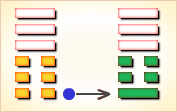
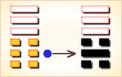
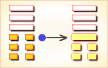
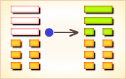
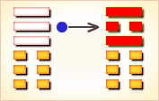
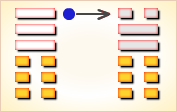

周易第12卦_否卦(天地否)_乾上坤下
如有疑问互相交流，微信：470283584
周易第12卦详解
否卦原文
否。否之匪人。不利君子贞。大往小来。
象曰：天地不交，否。君子以俭德辟难，不可荣以禄。
白话文解释
否卦：为小人所隔阂，这是不利于君子的占卜，事业也将由盛转衰。
《象辞》说：天地隔阂不能交感，万物咽窒不能畅釜，这是否卦的卦象。君子观此卦象，从而在国家政治否塞之时，应思隐居不仕，以崇尚俭约来躲避灾难，不要以利禄为荣。
《断易天机》解
否卦乾上坤下，为乾宫三世卦。否象征闭塞不通，是不吉之兆。否卦中，阴阳不交，是一切都不和谐之象。
北宋易学家邵雍解
大往小来，闭塞不通；否极泰来，修德避难。
得此卦者，万物闭塞之象，上下不合，诸事不顺，凡事宜忍，须待时运好转而有为。
台湾国学大儒傅佩荣解
时运：诸事不顺，不可妄动。
财运：适宜买入，后可获利。
家宅：勤俭免祸；仳离之象。
身体：气血不通，节制饮食。
传统解卦
这个卦是异卦（下坤上乾）相叠，其结构同泰卦相反，系阳气上升，阴气下降，天地不交，万物不通。它们彼此为“综卦”，表明泰极而否，否极泰来，互为因果。
大象：天气上升，地气下降，天地之气不交，主闭塞不通。
运势：上下不和，百事不通，凡事宜忍，须知否极泰来。
事业：陷入逆境，事业处于衰退阶段，多有不顺利。受小人干扰而不得志，多挫折。应坚持正道，勿与小人合流，团结志同道合者，自保以等待时机。保持自信心，戒慎恐惧，形势定会好转，事业终能成功。
经商：遇到强大的竞争对手，处于不利地位，信息不灵造成重大损失。应格外小心谨慎，坚持守势，等待有利时机到来，再努力发展自己的事业。
求名：条件还不成熟，再努力一阵子，并得到他人的帮助，理想可以实现。
婚恋：容易出现节外生枝的事情，甚至发生挫折和变故，双方若都充满信心，好的结果会出现。
决策：本人聪慧，精明，勤奋努力，但不注意人际关系，加上小人的排斥，命运或遭厄运。意志坚强，具有奋斗精神，且克服了不足，尽管付出的代价很高，必能成全事业。
台湾张铭仁解卦
否：表示不好、坏掉了！ 主凶象。否显现出阴阳之气不协调，在人及事方面诸多不被认同，有内外不合、众说纷纭的现象，因此事事难以进行，最好此时能彼此互相退让静下心来理性的沟通，方能转吉。婚姻、感情，已有个性、意见的冲突产生，若不能好好退让协商，恐有离异分手的结局。
解释：处在困境中。
特性：自尊心强，个性刚烈，不服输，反应快，学习能力强，高傲不亦亲近。财运佳，有领导才能，与上司不易相处。
运势：凶且衰，君子以险德避难，不可荣以禄也。运势不通达，诸事不顺，有损失且波折多。故宜守固正道，若稍偏差，则灾害至也。
家运：夫妻彼此不能协调，是非很多，劫财又带衰，慎之。
疾病：占病为凶兆，病在脑、肺及肠胃等，慎防癌症。
胎孕：不安。
子女：与双亲感情不睦，任其自然发展吧。
周转：告贷无门。
买卖：多有损失，但有贵人应在午未申日。
等人：不会来，因别的事情而违约。
寻人：因感情不睦而出走，去向不明，难寻。东南方。
失物：寻不回。
外出：会遇到不少麻烦和困难，宜推迟或提前行动。
考试：不理想。
诉讼：各走极端，有口难言，宜及时求和。
求事：先难后易，须有耐心去争取胜利，否则凶。
改行：难如愿。
开业：最好另择吉日。然此卦有先难之困，若能舒之则利。
周易第12卦初六爻详解
初六爻辞
初六。拔茅茹，以其汇，贞吉，亨。
象曰：拔茅贞吉，志在君也。
白话文解释
初六：连根拔掉茅草，及其同类，占得此爻则吉利，亨通。
《象辞》说：连根拔掉茅草，占得此爻吉利，比喻其志在清理君侧，为国尽忠。
北宋易学家邵雍解
平：得此爻者，宜守旧，小人得势之时，爻辞虽好，但须谨防小人牵连之事。做官的受职者待缺，当权者防扰。
台湾国学大儒傅佩荣解
时运：合伙谋事，家有吉祥。
财运：新设商业，用人谨慎。
家宅：亲戚同住；可以照应。
身体：传染之症，但无大碍。
初六变卦

初六爻动变得周易第25卦：天雷无妄。这个卦是异卦（下震上乾）相叠。乾为天为刚为健；震为雷为刚为动。动而健，刚阳盛，人心振奋，必有所得，但唯循纯正，不可妄行。无妄必有获，必可致福。
周易第12卦六二爻详解
六二爻辞
六二。包承，小人吉；大人否，亨。
象曰：大人否，享，不乱群也。
白话文解释
六二：厨中有肉，这对老百姓来说是吉利，对贵族来说并不是通泰的表现。
《象辞》说：贵族身处窘境，则能心怀惩戒，使其安守本分。
北宋易学家邵雍解
平：得此爻者，宜忍耐，宽容待人，不然会生是非。做官的宜低调行事。
台湾国学大儒傅佩荣解
时运：宽容待人，万事皆吉。
财运：买卖皆利，讼则上诉。
家宅：老人有疾无害。
身体：修身养性。
六二变卦

六二爻动变得周易第6卦：天水讼。这个卦是异卦（下坎上乾）相叠。同需卦相反，互为“综卦”。乾为刚健，坎为险陷。刚与险，健与险，彼此反对，定生争讼。争讼非善事，务必慎重戒惧。
周易第12卦六三爻详解
六三爻辞
六三。包羞。
象曰：包羞，位不当也。
白话文解释
六三：厨中有美味。
《象辞》说：心怀羞愧，因为才德不称其位。
北宋易学家邵雍解
凶：得此爻者，须防是非争诉之扰。做官的会退休离职。
台湾国学大儒傅佩荣解
时运：谨慎自守，以避羞辱。
财运：用人不当，暗中损耗。
家宅：行为不检，家门有羞。
身体：寒中带热，远求良医。
六三变卦

六三爻动变得周易第33卦：天山遁。这个卦是异卦（下艮上乾）相叠。乾为天，艮为山。天下有山，山高天退。阴长阳消，小人得势，君子退隐，明哲保身，伺机救天下。
周易第12卦九四爻详解
九四爻辞
九四。有命无咎，畴离祉。
象曰：有命无咎，志行也。
白话文解释
九四：君王有赏赐之命，没有灾害，谁能得到赏赐呢?
《象辞》说：君王有赏赐之命，没有灾害，说明君王论功行赏，臣下尽职效力，各行其志。
北宋易学家邵雍解
吉：得此爻者，家产日增，吉庆安乐。做官的会得到朋友和同僚之助，或升迁，或进财。
台湾国学大儒傅佩荣解
时运：好运来到，谋事可成。
财运：打定主意，转亏为盈。
家宅：家运转吉。
身体：体质尚强。
九四变卦

九四爻动变得周易第20卦：风地观。这个卦是异卦（下坤上巽）相叠，风行地上，喻德教遍施。观卦与临卦互为综卦，交相使用。在上者以道义观天下；在下者以敬仰瞻上，人心顺服归从。
周易第12卦九五爻详解
九五爻辞
九五。休否，大人吉；其亡其亡，系于苞桑。
象曰：大人之吉，位正当也。
白话文解释
九五：警戒覆亡，贵族王公如此存心则吉利。危险呵，危险，国家命运好像系在柔弱的苞草、桑枝上一样。
《象辞》说：九五爻辞讲贵族王公安不忘危，则吉利。因为九五之爻居上卦中位，像其人忧国忧君，才德正当其位。
北宋易学家邵雍解
吉：得此爻者，旧祸已去，好运将至，诸事皆吉。做官的会身居重位。
台湾国学大儒傅佩荣解
时运：安不忘危，诸事皆吉。
财运：机会尚佳，慎选伙伴。
家宅：祖业深厚。
身体：小心保养。
九五变卦

九五爻动变得周易第35卦：火地晋。这个卦是异卦（下坤上离）相叠。离为日，为光明；坤为地。太阳高悬，普照大地，大地卑顺，万物生长，光明磊落，柔进上行，喻事业蒸蒸日上。
周易第12卦上九爻详解
上九爻辞
上九。倾否，先否后喜。
象曰：否终则倾，何可长也。
白话文解释
上九：短暂的恶运，先遇恶运后交好运。
《象辞》说：恶运快终了，好运岂迢遥。命运交变之际，什么力量可以制止呢？
北宋易学家邵雍解
平：得此爻者，将会转好运，久困者利可期，久讼者讼事解。做官的失职者复职，闲缺者会走马上任。
台湾国学大儒傅佩荣解
时运：亨通如意，讼事可结。
财运：秋冬有利，春夏不利。
家宅：迁居大吉。
身体：即可病愈，须防复发。
上九变卦

上九爻动变得周易第45卦：泽地萃。这个卦是异卦（下坤上兑）相叠。坤为地、为顺；兑为泽、为水。泽泛滥淹没大地，人众多相互斗争，危机必四伏，务必顺天任贤，未雨绸缪，柔顺而又和悦，彼此相得益彰，安居乐业。萃，聚集、团结。